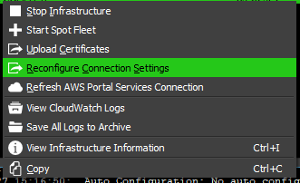

Note
While AWS Portal can enable cloud rendering in Deadline 10, AWS Deadline Cloud is a newer offering that has been built specifically for the cloud. It is a fully managed service that does not require installation or maintenance of infrastructure (e.g., repository, database, or license server). Worker fleet auto-scaling, asset synching, and licensing are all managed natively within AWS by Deadline Cloud. See here for more information on Deadline Cloud and its capabilities.
AWS Portal Workers Don’t Connect to Repository¶
What Went Wrong¶
Spot Instances have appeared in the Spot Fleets portion of the AWS Portal panel but no Deadline Workers are appearing in the Workers panel.
Figuring Out What Went Wrong¶
Verify that your infrastructure can connect to your Remote Connection Server.
See AWS Portal Link Log Locations for information on how to find the AWS Portal Link logs.
Solutions¶
Here are some common fixes to the problem.
Wrong Public IP Address on Gateway Security Group¶
It’s possible that the Security Group that’s attached to the Gateway machine in your infrastructure has the wrong Public IP address that allows you to SSH in. You can change the Public IP address by:
Opening the AWS Management Console.
Going to Services > EC2 > Instances.
In the filter bar you can type in
Gatewayto filter down to only the Gateway instance.Click the Gateway instance.
In the Description tab at the bottom of the screen find the
Security groupslabel and click the link to the right of it.Right click the Security Group that appears and click
Edit inbound rules.Edit the SSH (port 22) rule’s source column with the correct IP Address.
If you are unsure of what your Public IP address is you can select
My IPfrom the drop down menu in the source column.Click Save.
Wrong Public AWS Portal Link IP Address Override Set¶
If you have set an Override for AWS Portal Link’s Public IP address it’s possible that it has been set incorrectly. You can change this setting by:
Open the Deadline Monitor
Open the AWS Portal Panel and login if necessary.
Click the gear icon in the Deadline Infrastructure portion of the AWS Portal panel.
Input the correct IP Address into the
Override Public AWS Portal Link IP Addressfield.If you already have an infrastructure running you will then also need to change the Security Group of it to allow the new Public IP address.
AWS Portal Infrastructure is Incorrectly Configured for Your Remote Connection Server¶
It is possible that you supplied the incorrect client certificate, client certificate passphrase, or Remote Connection Server’s hostname to your infrastructure. Or maybe you changed your Remote Connection Server’s certificates, or set the SSL/TLS setting incorrectly for your infrastructure. If you suspect any of these causes, then you can reconfigure the connection settings on your infrastructure.
- Open your AWS Portal Panel
Enter Power User mode (Tools menu -> Power User Mode).
Create an AWS Panel (View menu -> New Panel -> AWS Portal).
- Right-click your infrastructure, and select Reconfigure Connection Settings from the drop-down menu:
- 
Re-supply your Connection Server settings in the window that appears as you did during initial setup of your infrastructure
Auto Configuration Settings¶
It’s possible that Auto Configuration settings could be interfering with an AWS Portal Workers ability to connect to the Repository. The two settings known to cause issues are Region and
Launch Worker At Startup. AWS Portal Workers have their own automatically generated region, as such for AWS Portal Workers Region should be disabled. Having Launch Workers At Startup
set to False will prevent the Deadline Worker application from starting up and connecting to the Repository. AWS Portal Workers take care of this automatically, so this option should be disabled
for AWS Portal Workers.